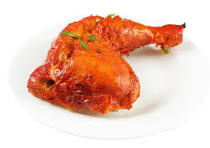

Chicken Tandoori is a popular Indian dish known for its vibrant color, smoky flavor, and tender, spicy meat. It originated from the Punjab region and is named after the traditional clay oven it’s cooked in: the tandoor.
Ingredients:Chicken Curd/Yogurt, Lemon juice, Mustard oil Spices Red chili powder, Turmeric, Garam masala, Cumin, Coriander Ginger-Garlic paste, Salt, Kasuri methi ..